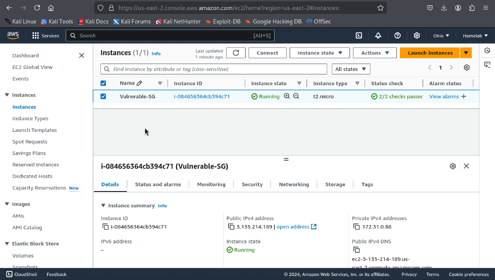
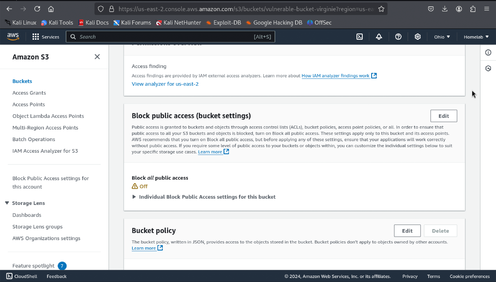
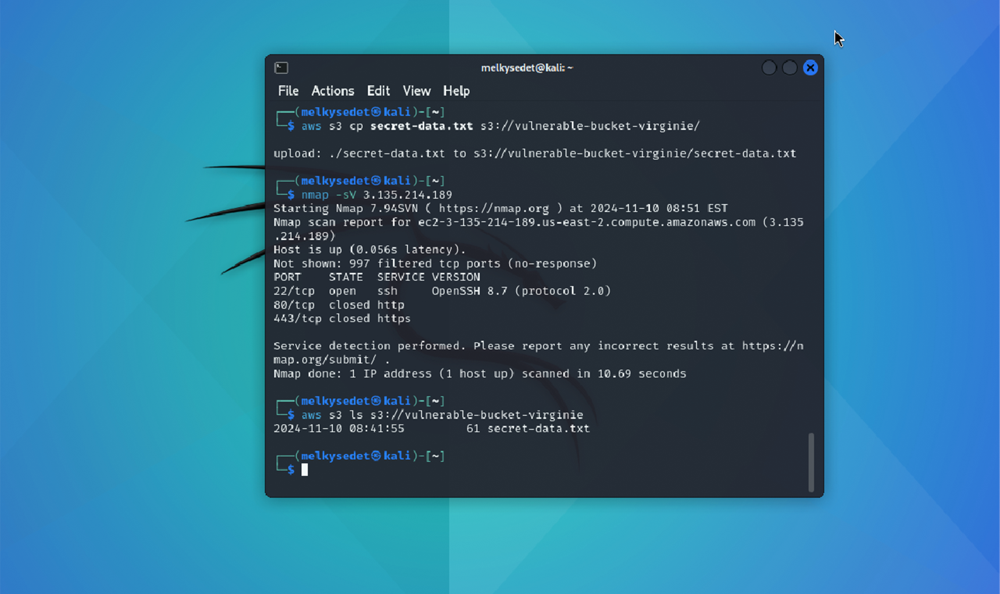
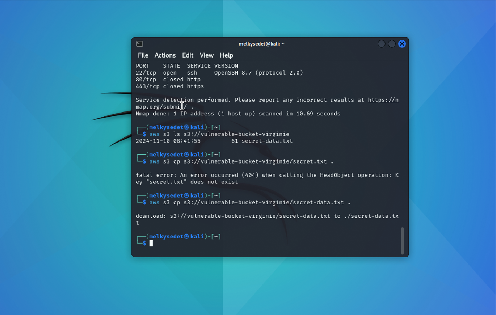
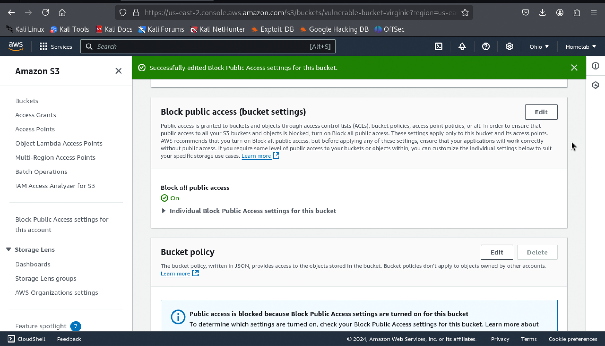

Uncovering vulnerabilities in cloud environments requires a sharp eye and the right tools. Using AWS and Kali Linux, I tackled a simulated misconfigured AWS setup, exposing weaknesses through advanced reconnaissance techniques and transforming the system into a fortified stronghold with targeted security measures.
AWS Environment Setup
EC2 Instance Configuration
I launched an EC2 instance (Amazon Linux 2) and configured the security group to allow SSH (port 22) and HTTP (port 80) access for testing. This setup exposed the instance to potential vulnerabilities, mimicking real-world cloud misconfigurations.
S3 Bucket Configuration
I created an S3 bucket with Block Public Access disabled, uploaded a sensitive file named secret-data.txt, and allowed public access to it to simulate a common misconfiguration.
Reconnaissance with Kali Linux
nmap Scan Results
Using nmap, I identified open SSH and HTTP ports, demonstrating the risks of exposed services.
AWS CLI S3 Enumeration
By leveraging AWS CLI, I enumerated the contents of the misconfigured S3 bucket and confirmed public access to sensitive data.
Exfiltration of Sensitive Data
Using AWS CLI, I downloaded secret-data.txt, demonstrating the potential impact of data exposure.
Mitigation and Security Hardening
To secure the environment, I enabled Block Public Access for the S3 bucket and verified restricted access, ensuring unauthorized users were denied access.
Key Learnings
- Cloud Misconfigurations: Misconfigured resources can lead to significant security risks.
- Reconnaissance Techniques: Tools like
nmapand AWS CLI are essential for identifying vulnerabilities. - Mitigation Strategies: Enabling block public access and implementing proper permissions effectively mitigates risks.
- Hands-on Experience: This project enhanced my skills in identifying, exploiting, and mitigating cloud vulnerabilities.
Conclusion
This lab reinforced the importance of securing cloud environments against misconfigurations. By addressing vulnerabilities and applying robust security measures, organizations can protect sensitive data and maintain cloud system integrity.